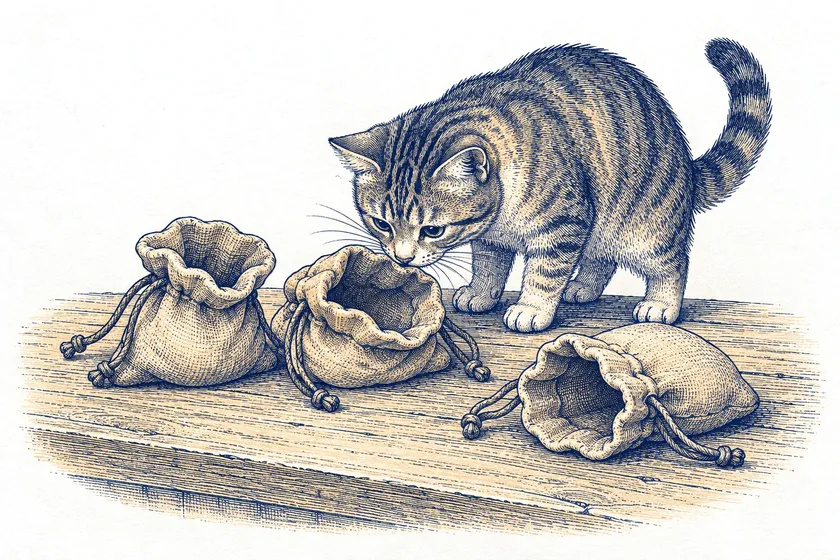
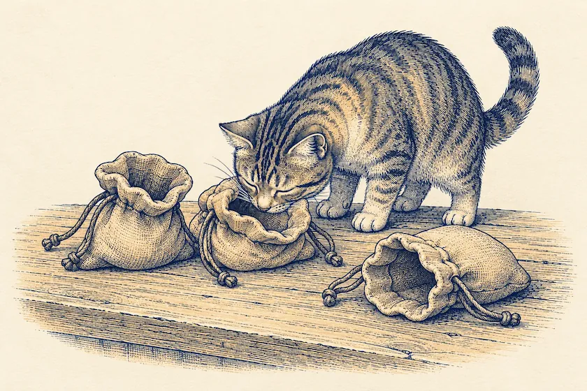
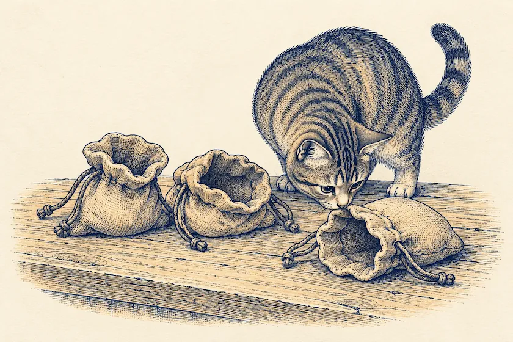

Säckel



Мешков пока нет
Заведите первый мешок: «Продукты», «Квартира», «Транспорт». Траты берутся из мешка, а остаток переходит дальше сам.



Заведите первый мешок: «Продукты», «Квартира», «Транспорт». Траты берутся из мешка, а остаток переходит дальше сам.